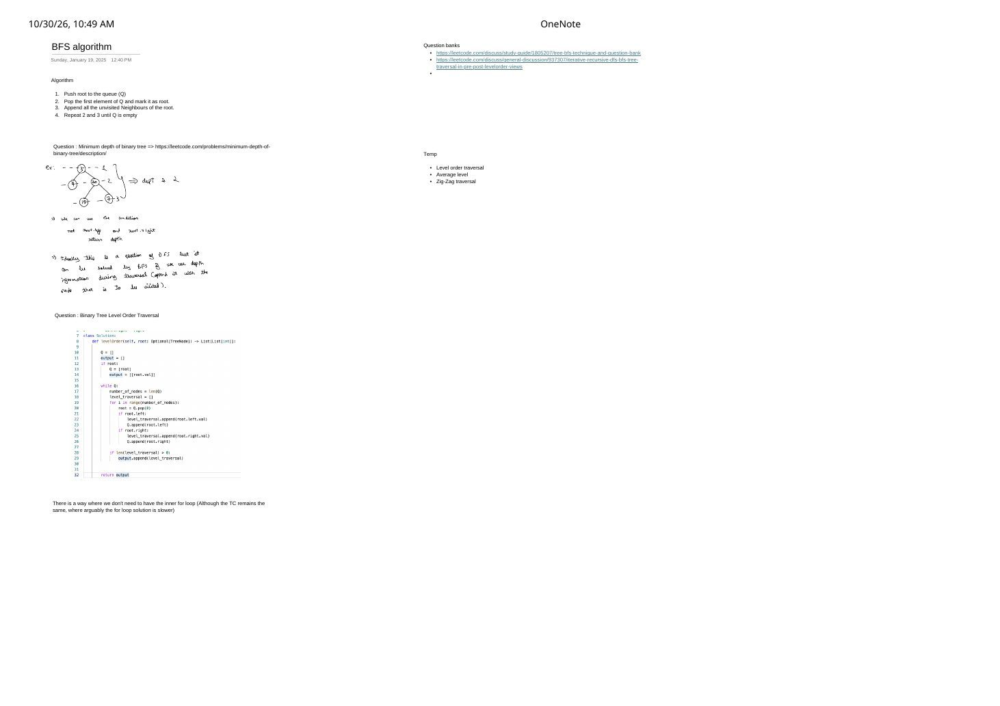

BFS Algorithm: Level-Order Queue Mechanics & Minimum Depth
Expanded from handwritten competitive coding study notes (01_BFS_algorithm.pdf) · View original handwritten page
Breadth-First Search (BFS) explores a tree or unweighted graph in concentric wavefronts (levels): every vertex at distance $d$ from the source is visited before any vertex at distance $d + 1$. Replacing DFS's LIFO stack with a First-In, First-Out (FIFO) queue gives BFS two superpower guarantees: automatic level-by-level grouping on trees and unweighted shortest-path optimality on graphs.
1. Core BFS Loop & The Visited-on-Enqueue Rule
BFS Iterative Queue Algorithm
- Push the starting
root/sourceinto queue $Q$ (and on graphs, immediately markvisited[source] = true). - Pop the front element of $Q$ and treat it as the current node.
- Append all unvisited neighbors (or non-null children on a tree) to the back of $Q$.
- Repeat steps 2–3 until $Q$ becomes empty.
Critical Graph Rule: Mark visited on ENQUEUE, Not on POP!
On a tree, each child has a unique parent, so no node can be discovered twice. On a general graph with cycles or diamonds—say $0 \to \{1, 2\}$ and both $1 \to 3$ and $2 \to 3$—waiting until a vertex is popped to mark it visited lets both $1$ and $2$ push $3$ into $Q$ while $3$ is still waiting in line! On dense graphs or grids, duplicate queue entries cause exponential blowup or Memory Limit Exceeded (MLE). Always set visited[nbr] = true the instant you push nbr into $Q$.
9 at depth $2$ and returns immediately without descending into deeper subtrees.2. Minimum Depth of Binary Tree (LeetCode 111)
In LeetCode 111, the minimum depth is the number of nodes along the shortest path from the root down to the nearest leaf node (!node->left && !node->right). As noted in the handwritten sheet:
- At first glance, tree depth problems look like recursive DFS—but DFS must inspect every root-to-leaf path before taking $\min$, costing $\mathcal{O}(N)$ even when the left child of the root is already a leaf and the right child is a $10^5$-node chain!
- With BFS, we bundle
(node, depth)in the queue (or increment a level counter per wave). Because BFS visits nodes in non-decreasing order of depth, the very first leaf popped from $Q$ is guaranteed to have minimum depth—allowing an immediatereturn depth!
// LeetCode 111: Minimum Depth of Binary Tree — BFS with (node, depth) pair
int minDepth(TreeNode* root) {
if (!root) return 0;
queue<pair<TreeNode*, int>> q;
q.push({root, 1});
while (!q.empty()) {
auto [node, depth] = q.front();
q.pop();
// First leaf encountered in level order is strictly the shallowest!
if (!node->left && !node->right) {
return depth;
}
if (node->left) q.push({node->left, depth + 1});
if (node->right) q.push({node->right, depth + 1});
}
return 0;
}3. Binary Tree Level Order Traversal (LeetCode 102): Two Queue Idioms
When a problem asks for a 2D array vector<vector<int>> grouped strictly by tree level (LeetCode 102), how do we know where one level ends and the next begins? The notes highlight two clean idioms:
Idiom A: Snapshot levelSize = q.size() (Standard Contest Idiom)
At the top of each while (!q.empty()) iteration, $Q$ holds exclusively the nodes of the current level. Capturing int sz = q.size(); before an inner for loop pops exactly those sz nodes while safely pushing the next level's children behind them:
// Idiom A: Level-size snapshot (C++)
vector<vector<int>> levelOrder(TreeNode* root) {
if (!root) return {};
vector<vector<int>> output;
queue<TreeNode*> q;
q.push(root);
while (!q.empty()) {
int levelSize = q.size(); // Freeze current level count!
vector<int> currentLevel;
currentLevel.reserve(levelSize);
for (int i = 0; i < levelSize; ++i) {
TreeNode* node = q.front();
q.pop();
currentLevel.push_back(node->val);
if (node->left) q.push(node->left);
if (node->right) q.push(node->right);
}
output.push_back(move(currentLevel));
}
return output;
}Idiom B: Single while Loop Without Inner for Loop
As remarked at the bottom of the handwritten page ("There is a way where we don't need to have the inner for loop (Although the TC remains the same)"), storing (node, level) directly in the queue eliminates the inner loop completely—and in Python, replacing list.pop(0) ($\mathcal{O}(N)$ shift!) with collections.deque.popleft() ($\mathcal{O}(1)$) is critical for true linear runtime:
# Idiom B: Single-loop BFS using collections.deque and (node, level) tuples
from collections import deque
class Solution:
def levelOrder(self, root: Optional[TreeNode]) -> List[List[int]]:
if not root:
return []
q = deque([(root, 0)])
output = []
while q:
node, lvl = q.popleft() # O(1) dequeue! (Never use list.pop(0) which is O(N))
if lvl == len(output):
output.append([])
output[lvl].append(node.val)
if node.left:
q.append((node.left, lvl + 1))
if node.right:
q.append((node.right, lvl + 1))
return output4. Time & Space Complexity + Practice Roadmap
| Structure | Time Complexity | Auxiliary Space | Worst-Case Queue Size |
|---|---|---|---|
| Binary Tree ($N$ nodes) | $\mathcal{O}(N)$ — each node enqueued & popped once | $\mathcal{O}(W) = \mathcal{O}(N)$ | Last level of a complete binary tree holds $\lceil N / 2 \rceil$ leaves |
| Directed Graph ($V, E$) | $\mathcal{O}(V + E)$ — each vertex popped once, each outgoing edge scanned once | $\mathcal{O}(V)$ (visited + queue) |
Star graph $0 \to \{1, \dots, V-1\}$ holds $V - 1$ nodes in $Q$ |
| Undirected Graph ($V, E$) | $\mathcal{O}(V + 2E) = \mathcal{O}(V + E)$ | $\mathcal{O}(V)$ (visited + queue) |
Up to $V - 1$ nodes in $Q$ simultaneously |
Immediate Follow-Up Variations (Noted on Right Margin)
- Binary Tree Level Order Traversal (LC 102): Collect
vector<int>per level. - Average of Levels in Binary Tree (LC 637): Accumulate
long long suminside thelevelSizeloop and pushstatic_cast<double>(sum) / levelSize. - Binary Tree Zigzag Level Order Traversal (LC 103): Pre-size
vector<int> row(levelSize)and write to indexleftToRight ? i : (levelSize - 1 - i)in $\mathcal{O}(1)$ without reversing! - Study Guides: LeetCode Tree BFS Question Bank · Iterative & Recursive Tree Views.
From the Handwritten Notes
Expand the original handwritten page below to inspect the exact derivations, dry runs, and annotations:
View original note — BFS Algorithm, Minimum Depth (LC 111) & Level Order Traversal (Page 1)

